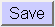

-
First you have to log in as administrator on the TomCat server.
When you installed TomCat you have chosen a name and password for this.
Please make sure you do not use the same name and password for any
other accounts, as the password is not stored very securely by TomCat.
Go to /aha/admin to get to the login form.
-
TomCat will show you the Administration Tool. You have to open the
"Service (Java Web Services Developer Pack)" node by clicking on the
node, not the word.
After this the "Service" node opens up and you have to then click on the term "Host (localhost)".
-
In the "main" browser frame you should open the "Available Actions"
drop down list and select
"Create New Context".
-
A list of fields appears, some of which need to be filled out.
-
You need to press 
and then
in order for the AHA! context to be created.
-
Before you can start
the initial configuration
of AHA! you need to restart the TomCat server.
(Execute shutdown.sh and startup.sh on Linux or shutdown.bat and startup.bat on Windows.)